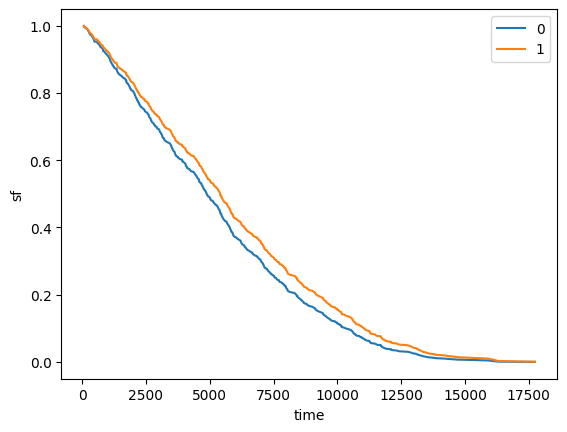
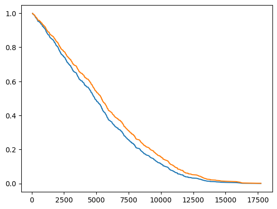

Cox (semiparametric proportional hazard)#
This demonstration requires 2 optional dependencies : pandas and lifelines. Install them if you wish to reproduce examples outputs. Otherwise, below examples may help you to understand how you can use Cox model with ReLife.
Loading data#
Let’s use a lifelines dataset.
[1]:
import lifelines
import pandas as pd
[2]:
df = lifelines.datasets.load_canadian_senators()
Clean up the dataset
[3]:
df = df[["Name", "Province / Territory", "reason", "diff_days", "observed"]]
df = df[df["reason"] != "Appointment declined"]
# standardize text (removing white spaces, non alphanumeric characters and put in lower case)
df["Province / Territory"] = (
df["Province / Territory"].str.replace("\W+", "", regex=True).str.lower()
)
display(df.head())
| Name | Province / Territory | reason | diff_days | observed | |
|---|---|---|---|---|---|
| 0 | Abbott, John Joseph Caldwell | quebec | Death | 2363 | True |
| 1 | Adams, Michael | newbrunswick | Death | 1090 | True |
| 2 | Adams, Willie | northwestterritories | Retirement | 11766 | True |
| 3 | Aikins, James Cox | ontario | Resignation | 5333 | True |
| 4 | Aikins, James Cox | ontario | Death | 3133 | True |
[4]:
df["Province / Territory"].value_counts()
[4]:
Province / Territory
quebec 246
ontario 242
novascotia 98
newbrunswick 93
britishcolumbia 44
manitoba 44
alberta 43
princeedwardisland 39
saskatchewan 32
newfoundlandandlabrador 30
northwestterritories 7
yukon 3
westernprovincesdivision 2
maritimesdivision 2
quebecdivision 2
ontariodivision 2
nunavut 1
Name: count, dtype: int64
Dummy encoding of “Province / Territory” covariates
[5]:
# dummy encoding of "Province / Territory"
df = pd.get_dummies(df, columns=["Province / Territory"], prefix="covar", dtype=int)
# remove covariate columns corresponding to low count province
covar_cols = [col for col in df.columns if "covar" in col]
province_count = df[covar_cols].sum()
province_with_low_count = province_count[province_count < 10]
df = df.drop(columns=province_with_low_count.index)
[6]:
print(df.columns)
Index(['Name', 'reason', 'diff_days', 'observed', 'covar_alberta',
'covar_britishcolumbia', 'covar_manitoba', 'covar_newbrunswick',
'covar_newfoundlandandlabrador', 'covar_novascotia', 'covar_ontario',
'covar_princeedwardisland', 'covar_quebec', 'covar_saskatchewan'],
dtype='object')
Fitting#
Lifelines version
[7]:
from lifelines.fitters.coxph_fitter import CoxPHFitter
# Lifelines model fit
covar_cols = [col for col in df.columns if "covar" in col]
ll_model = CoxPHFitter()
ll_model.fit(
df=df,
duration_col="diff_days",
event_col="observed",
formula="~ " + " + ".join(covar_cols),
)
print(ll_model.params_)
covariate
covar_alberta 0.345928
covar_britishcolumbia 0.173319
covar_manitoba 0.292570
covar_newbrunswick 0.193955
covar_newfoundlandandlabrador 0.444993
covar_novascotia 0.266590
covar_ontario 0.319706
covar_princeedwardisland 0.397880
covar_quebec 0.344936
covar_saskatchewan -0.049557
Name: coef, dtype: float64
[9]:
# Lifelines sf
max_offset = 0
X = df.filter(regex="covar").iloc[:2]
sf_lifelines = ll_model.predict_survival_function(
X=X,
times=range(
df["diff_days"].min().astype(int),
df["diff_days"].max().astype(int) + max_offset,
),
)
sf_lifelines.columns = X.index
sf_lifelines.plot(xlabel="time", ylabel="sf")
[9]:
<Axes: xlabel='time', ylabel='sf'>

ReLife version
[10]:
from relife.lifetime_model import SemiParametricProportionalHazard
cox_model = SemiParametricProportionalHazard()
cox_model.fit(
df["diff_days"].to_numpy(),
covar=df.filter(regex="covar").to_numpy(),
event=df["observed"].to_numpy(dtype=bool),
)
[10]:
<relife.lifetime_model._semi_parametric.SemiParametricProportionalHazard at 0x75ab3fa86dd0>
[13]:
timeline, sf_values = cox_model.sf(covar=X, se=False)
[16]:
import matplotlib.pyplot as plt
plt.plot(timeline, sf_values[0])
plt.plot(timeline, sf_values[1])
[16]:
[<matplotlib.lines.Line2D at 0x75ab3f836150>]
